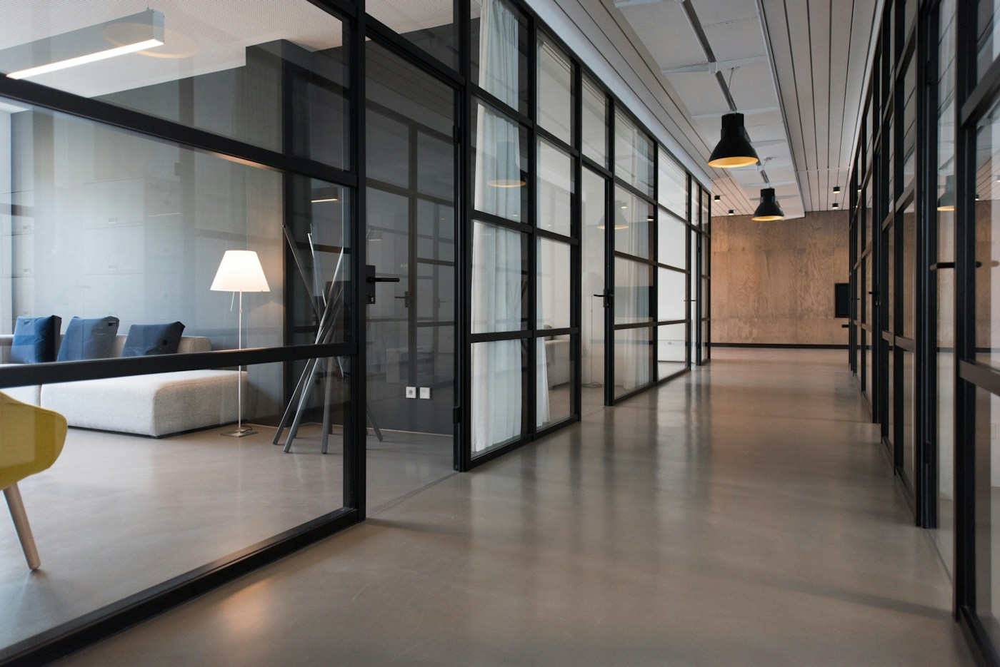

01
Vitres
Fenêtres, baies vitrées, vérandas : indiquez les surfaces et leurs conditions d’accès.
Parlons de vos vitresLes vitres, le canapé, la maison…
Confiez à Vitrio le nettoyage dont vous avez besoin.

INSPIRATION · INTÉRIEURUn besoin ponctuel ou un entretien à envisager ?
Décrivez votre projet : les modalités de l’intervention seront précisées avec vous.
Fenêtres, baies vitrées, vérandas : indiquez les surfaces et leurs conditions d’accès.
Parlons de vos vitresLes pièces de vie et surfaces du quotidien, selon les tâches que vous souhaitez confier.
Parlons de votre maisonUn nettoyage à étudier selon le revêtement, l’état du canapé et les recommandations du fabricant.
Parlons de votre canapéTerrasses et abords de la maison : précisez les matériaux, la surface et l’accès à l’eau.
Parlons de vos extérieursNETTOYAGE & SERVICES
Emplacement réservé à la mascotte originaleVitrio est une petite entreprise française de nettoyage et de services à domicile. Un point de départ simple : comprendre ce que vous souhaitez faire nettoyer.
Chaque demande permet de préciser le lieu, les surfaces et les contraintes d’accès avant de convenir d’une intervention.
Faire connaissanceVous indiquez la prestation, votre commune et les précisions utiles.
Votre demande reste en attente. Aucun rendez-vous n’est confirmé automatiquement.
Le responsable vérifie la faisabilité et le planning avant de confirmer ou de refuser.
Les photos des interventions Vitrio seront ajoutées ici. Ces emplacements ne présentent aucun chantier réalisé.
Choisissez la prestation et proposez un créneau. Le responsable examine votre demande avant de vous répondre.
Attendez l’e-mail de confirmation de Vitrio avant de considérer le créneau comme validé.
Vos informations servent à traiter votre demande. En savoir plus sur vos données.
Choisissez la date et l’heure, puis complétez vos coordonnées dans le calendrier sécurisé.
Le calendrier ne s’affiche pas ? Ouvrir le calendrier dans un nouvel onglet →
Non. Vous envoyez une demande. Le rendez-vous est confirmé uniquement après validation du responsable et réception de votre e-mail de confirmation.
Décrivez les surfaces, l’état et les conditions d’accès. Les modalités et le tarif de la prestation doivent être convenus avec Vitrio avant l’intervention.
Choisissez un autre créneau affiché ou contactez Vitrio pour évoquer vos contraintes.
Les informations pratiques de Vitrio seront complétées avant l’ouverture du site.